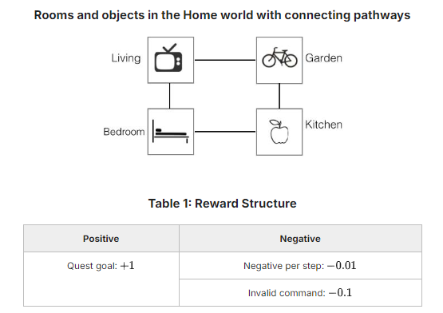

The environment
A house with four rooms — Living, Garden, Kitchen, Bedroom — each with one useful object. At the start of an episode you're dropped in a random room and given a random quest: You are bored / getting fat / hungry / sleepy. To finish it you must reach the right room and use the right object: watch tv, exercise bike, eat apple, sleep bed.
The catch: you never see the room's name. Each step you get one of four descriptions of the room, chosen at random — sometimes helpful ("You can watch TV here"), sometimes oblique ("A red juicy fruit."). Formally the hidden state is h = (room, quest) and the observation is s = (room description, quest text).
Rewards
| Finish the quest | +1 |
| Any other valid command | −0.01 |
Invalid command (e.g. eat tv) | −0.11 |
| Episode ends after | 20 steps |
With discount γ = 0.5 the best possible expected reward over random starts is 0.55375: 1 if you start in the right room, 0.49 if it's next door, 0.235 if it's diagonally opposite.
